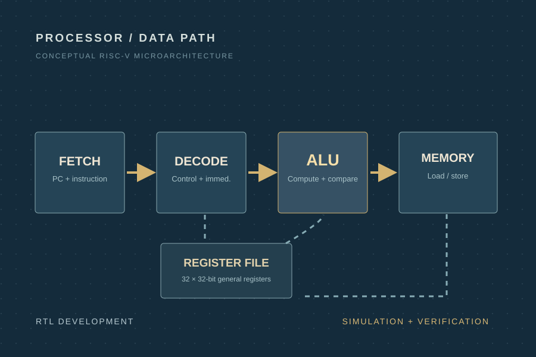

Digital Design / Computer Architecture
32-bit RISC-V CPU + physical design flow
I designed and implemented a 32-bit RISC-V CPU in Verilog/SystemVerilog as part of a digital design onboarding project. The design included the instruction fetch path, register-file interfacing, decoding logic, an ALU, branching behavior, and SRAM interaction. Supporting even a focused instruction subset required careful handling of data paths, control decisions, and immediate formats, which made the project a strong introduction to processor architecture.
A major part of the learning came from verification and debugging. I used simulation to investigate failing behaviors, refine control logic, and validate that the CPU handled arithmetic, immediate, load/store, branch, and halt operations correctly. My supported instruction subset included add, sub, addi, lw, sw, beq, sll, srl, and ebreak. This project helped me understand how digital systems are built modularly and then proven through repeated testing.
I also explored the next stage of the chip flow through a physical-design onboarding project. That work introduced synthesis, floorplanning, power planning, placement, clock-tree synthesis, and routing using industry tools. Seeing the path from RTL to a placed-and-routed design gave me a fuller understanding of how logic design decisions propagate into physical implementation constraints.

Implementation snapshot
Supported instructions
- add, sub, addi
- lw, sw
- beq
- sll, srl
- ebreak
Key concepts practiced
- sign extension
- instruction decoding
- branch control
- SRAM interfaces
- simulation-driven debugging